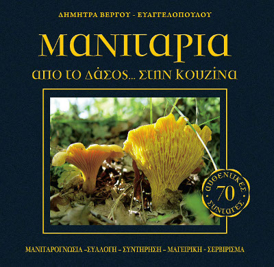
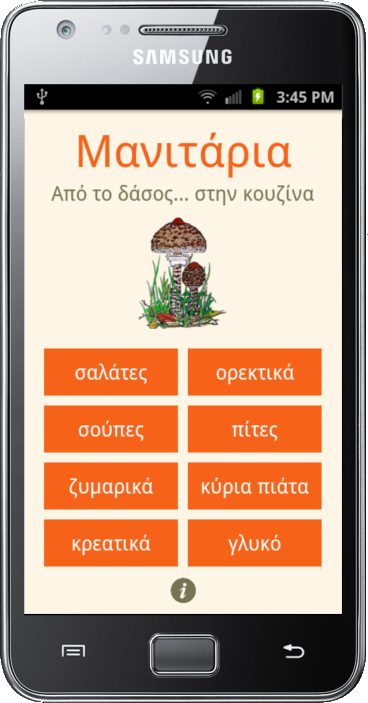
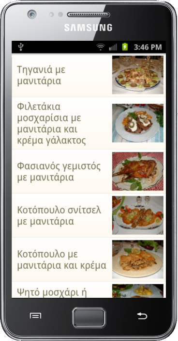
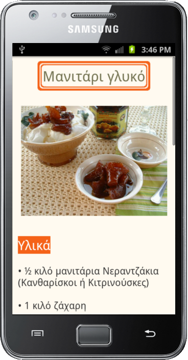
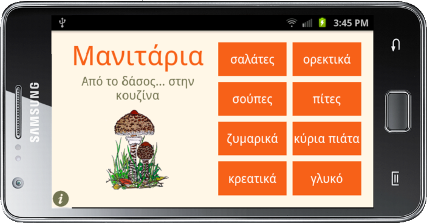
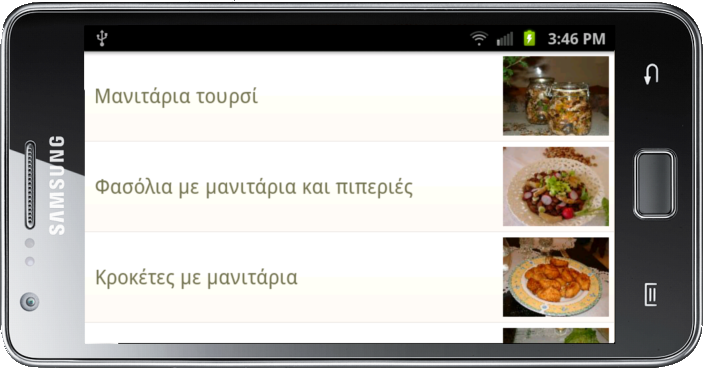
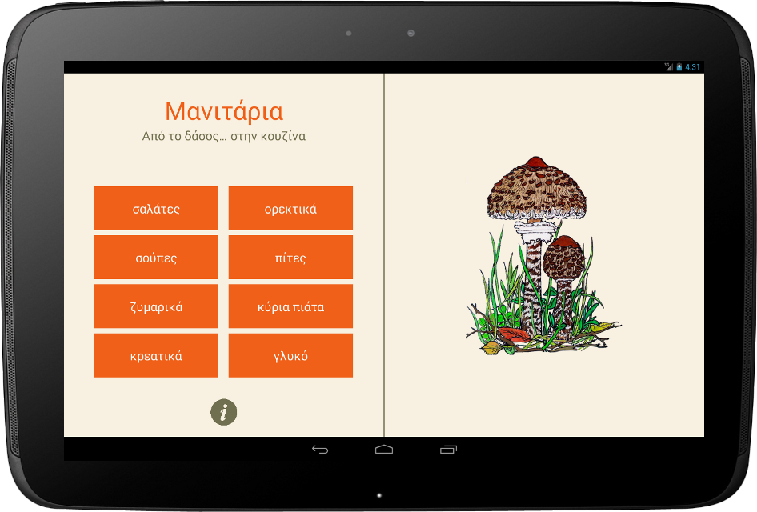
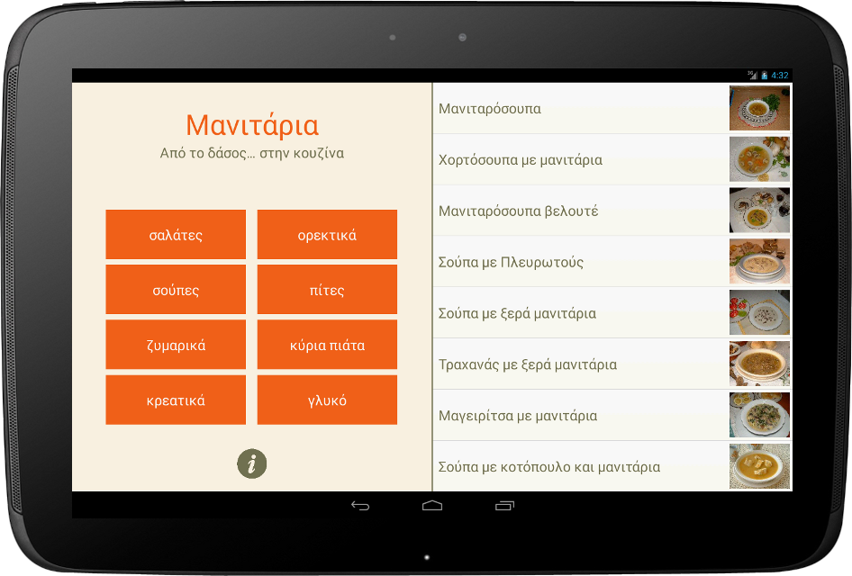

Manitarosyntages
Manitarosyntages is a recipes Android app in Greek. It contains 70 original mushroom recipes found in the book
"Mushrooms, from the forest to the kitchen" by Dimitra Vergou Evangelopoulou.

It is available offline and optimized for tablets.
If you can read Greek or just want to check out some pretty pictures of food, get the app from the
Play Store
and visit Dimitra's blog
for more recipes.
The code is not up on github yet, so just email me with any questions.






